MuSID-KD：把前缀群组和排序影响带入语义码蒸馏
MuSID-KD 研究如何把生成式推荐教师的知识传给轻量学生，同时保留共享语义码前缀的候选群组排名，以及各码位对最终物品排序的不同影响。Fengshi Zhang、Xiyan Ding 与 Wei Zhang 来自华东师范大学，Shuxiao Xie 来自复旦大学；一作主机构为华东师范大学。论文于 2026 年 10 月 26 日公开，唯一论文入口为 MuSID-KD: Multigranularity Knowledge Distillation for Generative Recommendation with Semantic IDs。本次阅读核验日期为 2026 年 10 月 28 日。原文提供匿名代码入口，本次独立访问返回 HTTP 403，不能确认源码可用，也没有重跑作者实验。
语义码生成推荐需要在多个位置反复解码，因而带来推理开销；普通蒸馏既可能没有充分保存共享前缀的候选群组排名，也没有区分各个码位对最终物品排序的不同影响。
1. 背景和问题
语义 ID 把一个物品表示为几个离散词元，而不是为整个目录的每个物品设置独立输出类别。用户历史进入模型后，模型逐位预测下一件物品的语义码，再通过合法码约束和 beam search 找到推荐候选。这使模型能够在共享前缀中表达物品之间的结构：同一前缀下面的叶子可能共享某些语义或协同特征，后续码位继续区分更细的候选。不过，训练与服务的对象仍然是完整物品，用户不会因为模型某个码位预测正确就获得部分推荐收益。码位概率、路径得分和完整物品排序之间因此存在需要明确处理的转换。
蒸馏的工程动机是让更轻的学生代替昂贵的自回归教师。本文教师为 TIGER，学生保留冻结的历史编码器，用注意力、循环或时间卷积的轻量读出与前缀条件预测头产生语义码。这样的改动可以减少反复解码的代价，但学生容量小于教师，无法在所有上下文、候选和码位上完全复刻教师概率。蒸馏损失就必须决定哪些误差更值得纠正。把每个输出位置平均对齐虽然直接，却未必对应推荐质量最敏感的错误，也未必适合共享前缀的树状输出空间。
第一类问题出现在候选群组层面。最终物品概率是叶子概率；给定一个前缀，把所有属于它的候选物品概率相加，就得到该群组的概率质量。若学生精确等于教师的所有叶子概率，所有群组的概率也必然相等，这是求和的直接结果，论文并不否认它。实际困难是有限学生只能近似匹配，损失可能容忍一组分散在多个叶子上的小误差，而这些误差相加后足以颠倒两个群组的相对顺序。需要显式监督中间群组，是近似学习时的优化偏好，而不是叶子分布与群组分布在数学上互不相关。
第二类问题是同一个物品对的不同码位可能给出方向相反的贡献。完整路径分数由多位条件对数概率相加，教师对物品甲优于乙，并不意味着教师在每个位置都比学生更强烈地偏向甲。有的位置学生已经产生很大的正向差，照着教师改反而会降低这个差；另一些位置学生给出负向贡献，对齐教师可以改善排序。若所有码位都被同等拉向教师，正负效应就可能互相抵消。这里关心的不是单个词元的分类对错，而是某一层的分数校正怎样改变最终候选之间的比较。
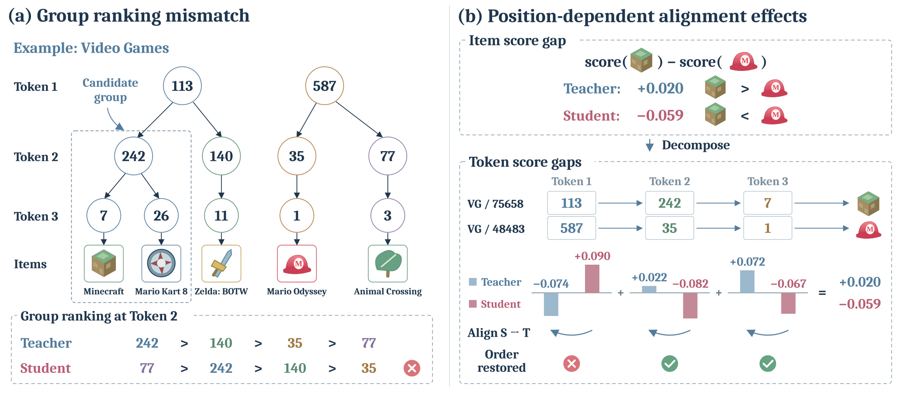
Figure 1 左侧用视频游戏物品展示层级语义码的直觉。Minecraft 和 Mario Kart 8 共享前面的分支，其他物品位于不同子树；下方列出教师与学生对第二层候选群组的排序。教师把前缀二四二排在前面，学生却把七七对应群组排在最前。图的作用是说明完整物品学习仍可能留下中间群组错序，而不是断言图中码号具有固定、可解释的自然语言类别。图中使用三层码是演示结构，实际实验学生采用四个前缀条件头，不能从示意图反推实现只有三位。它也没有证明每次群组错序都会导致 beam search 丢失真实目标，具体影响仍要通过推荐指标与机制诊断检验。
右侧固定比较 Minecraft 与 Mario Odyssey。教师三位分数差相加为正零点零二零，学生相加为负零点零五九，因此两者最终物品顺序不同。第一位学生原本提供正零点零九零的有利贡献，教师该位反而为负零点零七四；替换这一位会使学生的顺序更糟。第二、第三位的教师贡献则能改善学生的总差。下方红叉与绿勾说明“向教师靠近”在不同层上不是同一个方向的排序操作。这个例子使用真实分数结构解释动机，但不是对所有训练样本的因果证明；后文的残差统计才衡量相反符号在数据中的普遍程度，RIGD 还会排除最终用于身份区分的码位，不能把图中所有演示操作直接视为训练规则。
MuSID-KD 的两个组成部分分别回应这些缺口。HCDA 将完整候选物品概率沿前缀聚合，逐层对齐教师与学生；RIGD 则计算只替换一层分数贡献后，物品对的排序代理损失是否下降，并据此选择和加权监督。二者都只在训练阶段计算，学生的在线架构和 beam search 保持原样。这一设计把“教师更强”细化为两个可测问题：学生是否保存了教师在中间粒度的概率结构，以及它是否把纠错强度分给真正有助于恢复最终顺序的位置。
本文与一般知识蒸馏的差别不在于使用了新的教师模型，而在于利用输出空间的固定结构。教师和学生必须共享物品到 SID 的映射，并在同一个缓存候选集合上打分，才可以明确求和和逐层比较。若两者码本不同，或教师候选遗漏了某一类长尾物品，当前目标无法自动把这部分知识补回来。学生在候选集内更像教师，也不保证目录外的行为更合理；因此候选覆盖、码本更新和教师质量是迁移到新系统前需要先确认的条件。
从推荐系统角度看，本文提供了一种将模型压缩与排序目标衔接的办法：不只追求 token KL 小，还把前缀群组和截断边界附近的物品比较纳入训练。对大模型结构化生成，类似思想可以启发分层工具路由或离散码输出，但前提是各位置贡献能够组成明确的最终分数，且结构映射稳定。论文没有验证开放式自然语言生成，也没有证明这种代理在任意序列任务上有效。实验中的收益应放回固定教师、相同码本、相同学生架构和推荐评价协议内理解。
另一个需要提前区分的概念是教师能力与监督形式：共享同一教师并不保证所有蒸馏目标传递了相同知识。ground-truth 前缀上的词元分布、教师搜索到的候选物品分布以及跨推荐边界的物品对，覆盖的条件和错误类型不同，后文比较这些目标时必须保持各自定义。
2. 方法
2.1 HCDA：从候选物品分布到前缀群组分布
教师先为每个训练请求生成最多六十四个不同的合法候选，缓存它们的完整路径分数和各层条件对数概率。学生在完全相同的候选支持上重新计算分数，而不是直接使用教师顺序作为自己的预测。用户历史编码器在实验中冻结，学生的轻量读出与预测头接受更新。这个共同支持保证教师与学生的概率、群组和物品对都能逐项比较，也明确了目标只覆盖哪些物品。候选数不足时按实际数量处理，不能把最多六十四理解为每个请求总有六十四个有效物品。
符号解释：$m\in\{T,S\}$ 表示教师或学生，$u$ 是用户请求，$x_u$ 是历史，$z_{i,d}$ 为物品 $i$ 的第 $d$ 个语义码，$L$ 是码长；$s_m$ 是完整路径对数分数，$\mathcal C_M$ 为最多 $M$ 个教师候选，$\tau$ 为温度。$p$ 在最后一式表示一个长度为 $d$ 的前缀，$\pi_m^{(d)}$ 是其候选群组的概率质量。这里的归一化分母是缓存候选而非全目录；即使模型可以在目录中解码其他合法物品，本轮蒸馏概率也没有直接覆盖它们。最后一层因唯一完整 SID 对应物品而退化为候选物品分布。
符号解释：$D_{\mathrm{KL}}$ 是从教师到学生的 KL 散度，外层期望按训练请求平均，各层默认等权。损失既约束粗群组也约束完整物品，因此不是把 token 条件分布的 KL 逐位照搬。前缀边缘来自同一组叶子概率，结构上保持一致；多层目标为近似学生提供不同粒度的误差信号。附录还指出，当四层等权时，按 KL 链式法则可以解释成对逐级条件分布施加四、三、二、一的隐式权重，而只保留叶子项对应每级权重相同。这有助于理解早期群组为何受到更强约束，但不意味着每一位都应该无限加大权重。
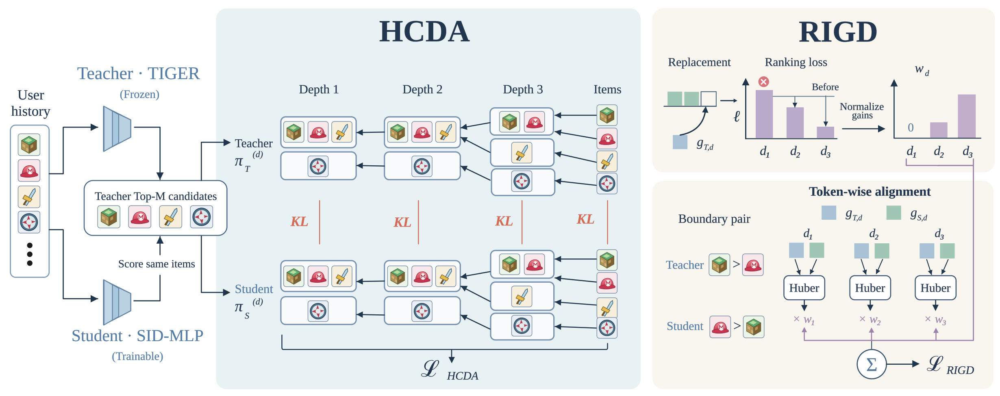
Figure 4 左侧从相同用户历史出发，冻结教师 TIGER 给出 Top-M 候选，学生对相同物品重新打分。中间蓝色区域展示从完整物品概率向不同前缀层级聚合的过程，红色 KL 连接的是同一层的候选群组分布，而不是同一个词元在不同上下文中的条件分布。图中一组物品在浅层被合并，层数增加后逐步拆开，直到每个叶子单独成为类别。这一方向解释了 HCDA 如何让学生同时看到“群组总质量偏了多少”和“群组内部具体物品偏了多少”，也说明教师缓存必须保存足够的路径得分才能构造一致的叶子概率。图内教师和学生可以产生不同顺序，但二者比较的物品支持必须一致。
右上角将某一层学生分数贡献替换为教师贡献，并观察排序代理损失的变化。只有使损失下降的位置获得正的归一化增益；右下角真正优化的仍是教师与学生原始分数贡献之间的 Huber 误差，权重来自上方步骤。替换操作用来决定监督强度，不是把替换后的分数当作部署预测，也不是直接最小化那条替换路径的损失。 两个区域最后与真实下一物品监督共同更新学生。图的输入输出都属于训练流程，在线服务不运行候选群组聚合、反事实替换或权重估计；这与“没有任何额外成本”不同，因为缓存导出、训练显存和训练时长仍然增加，后文专门量化这部分代价。
图中群组连线还意味着同一前缀必须由同一固定物品映射定义，不能在两边分别聚类后直接比较。共享编码器减少输入表征差异，却没有强迫学生输出同样的叶子概率；真正可训练的是学生的读出与条件头，教师始终只提供固定目标。
2.2 RIGD：用排序代理的下降选择逐层纠错
RIGD 先把完整物品对的分数差拆为各码位贡献。因为相同前缀上的条件概率相同，两个物品在第一次分叉以前不会产生差异；之后每一层可能加强或削弱教师偏好的顺序。它选择跨教师 Top-K 截断边界的物品对，把学习资源集中在是否进入推荐结果的比较上。默认取教师排名前十与十一到四十名形成对，而不是枚举整个目录的所有两两关系。教师排名仍是监督来源，不等于真实用户对这两件物品的偏好标签。
符号解释：$g_{m,d}$ 是第 $d$ 层对物品 $i$ 相对 $j$ 的分数差贡献，$G_m=s_m(i)-s_m(j)$ 是完整排序差，$r_d$ 是教师与学生该层贡献之差。$G_m>0$ 表示模型把 $i$ 排在 $j$ 前面。残差为正说明向教师靠近会增大当前差，为负则会减小差；但残差的绝对值只表示分数改变量，不直接等于排序损失的改善量，二者不能在加权时混为一谈。
符号解释：$K$ 是推荐截断，$B\le M$ 是较低排名候选的边界，$d_{ij}^{\star}$ 为首次 SID 分叉位置，$\mathcal D_{ij}$ 为允许 RIGD 监督的非最终层。完整差 $G_m$ 仍然包含最后位置；最后位置只是从 RIGD 逐层对齐中排除，因为它承担精确身份区分。若两件物品仅在最终位分叉，本对没有可用位置；若候选少于 $B$，有效边界也应随之缩小。把最后层从总分中删掉，会改变论文方法的含义。
符号解释：$\widetilde G_{S,d}$ 只替换第 $d$ 层，其他学生贡献保持不动；$\mu$ 是排序间隔，$[a]_+=\max(a,0)$，$A_d$ 为非负替换增益。若替换没有改善这个教师偏好方向的 Softplus 代理，该位不接收权重。由于代理随 $G$ 单调下降，正增益在这里与正残差同方向，但增益数值还取决于当前总差所在的损失曲线区域。已经很容易的物品对与靠近边界的物品对，即使分数修正相同，也不必得到相同的收益。
符号解释：$w_d$ 是对同一物品对内所有可用层归一化的监督权重，$\epsilon$ 防止零分母，停止梯度意味着优化器不能通过改变权重本身走捷径。没有正增益时所有层权重为零，但这些有效物品对仍保留在平均分母中。也就是说，训练不是只在“看起来有利”的对上重新计算一个条件均值；否则有效监督强度会随正增益比例隐式变化。
符号解释：$\mathcal Q_{\mathrm{valid}}$ 为可用层非空的训练物品对，$\rho_H$ 为单位阈值 Huber 损失，$\sigma_d$ 是训练物品对上教师该层贡献的标准差，并设置下界。标准化减少不同层分数尺度的影响，Huber 限制大残差的支配；权重告诉模型优先在哪些层拉近，实际梯度仍来自原始贡献误差。没有有效对时损失为零。它仍是基于教师顺序的局部代理，不等同于对最终 NDCG 的无偏梯度，更不构成码位因果贡献的识别。
2.3 联合训练与不增加模块的在线路径
符号解释：$i_u^+$ 是实际观察到的下一物品，$\mathcal L_{\mathrm{CE}}$ 约束真实行为目标，$\lambda_H$ 与 $\lambda_R$ 控制两种结构化蒸馏强度。默认有效系数为四与三十一点四二，二者量级不同还受到按请求平均、按有效物品对平均及尺度标准化的影响，不能只比较系数大小判断哪一项更重要。教师目标和尺度统计都只使用训练请求，验证 NDCG@10 用于选择检查点，不读取测试结果来决定停止点。
在线只运行冻结历史编码器、学生读出、四个前缀条件预测头和宽度五十的合法 SID beam search。HCDA 和 RIGD 不增加在线预测模块，但也没有移除既有 beam search；学生不是一次性输出所有完整物品。不同学生读出仍具有各自的计算特征，所以在训练后比较吞吐时应固定同一架构，而不能把 MLP 与 CNN 的速度差全部归因于蒸馏损失。训练阶段则要支付候选缓存、分组求和、物品对构造和逐层权重计算，架构不变与总开发训练成本不变是两个不同结论。
3. 实验结果
3.1 数据、学生与主结果的比较范围
Beauty 和 Toys 使用 Amazon Reviews 2014，Video Games 使用 Amazon Reviews 2023，补充 Steam-100K。交互按时间排序，用留一法预测下一物品，每个请求最多取此前二十次交互。教师与学生共享冻结 T5 历史编码器、词元 embedding、物品映射和合法码约束；可训练读出与头参数分别约为 MLP 一百六十六点四万、GRU 一百七十六点三万、CNN 一百七十一点三万，这些数不含冻结编码器和 embedding，不能当成整个部署模型参数量。所有方法采用同样切分、码本和宽度五十的解码，报告种子四十二到四十四的均值。
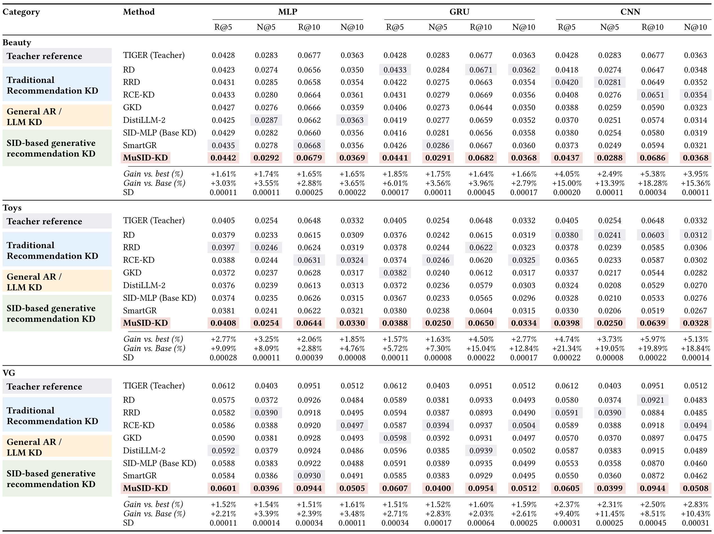
Table 1 按数据集分成三块，每块再横向排列 MLP、GRU、CNN 的 Recall@5、NDCG@5、Recall@10、NDCG@10。红色为学生最好均值，灰色为其他学生最强值，TIGER 行只是教师参考，不参与学生最优基线的选择。MuSID-KD 在三乘三乘四的三十六项学生比较里都取得最高均值；论文给出的九个设置平均 NDCG@10 相对 Base KD 提升百分之八点三一，相对各设置最强其他学生提升范围百分之一点五九到五点一三。这些百分数先在各设置内计算再平均，不是把不同数据集指标直接混成一个总体命中率。
以 Beauty 的 MLP 为例，Recall@10 从 Base KD 的零点零六六零到零点零六七九，相对提升约百分之二点八八；最强其他学生为零点零六六八，因此相对它只提高约百分之一点六五。CNN 的同项从零点零五八零到零点零六八六，相对 Base KD 提升百分之十八点二八，但相对其他学生最强的零点零六五一为百分之五点三八。选择不同分母会产生明显不同的数字，不能只展示较大的那一个。表底 SD 是 MuSID-KD 三次运行的标准差，没有给出所有配对差的显著性检验；均值全面领先并不等于三十六项都已证明统计显著。
还要分清蒸馏损失之间的参照。Base KD 是 ground-truth 前缀上的 token KL 加交叉熵，Leaf-only 才是完整候选物品分布对齐；二者不能交换使用。外部 RD、RRD、RCE-KD、GKD、DistiLLM-2、SmartGR 都被适配到相同教师和学生协议，结果反映当前适配配置的比较。部分学生指标超过 TIGER 教师并不矛盾，因为还有真实下一物品监督和结构约束；它不证明学生在任何上下文中都比教师强，也不能外推到更大目录或线上业务收益。
主表给出的标准差也应保留原始量纲，例如 Beauty 的 MLP Recall@10 标准差为零点零零零二五；它描述完整方法自身三次运行的离散程度，缺少配对基线结果时不能由此直接计算可靠的显著性。
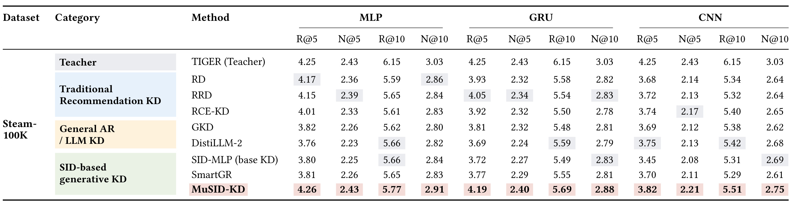
Table S1 使用百分数表示指标，和主表的零到一尺度不同。MLP 的 NDCG@10 从 Base KD 二点八四到 MuSID-KD 二点九一，GRU 从二点八三到二点八八，CNN 从二点六九到二点七五；按各架构相对变化再平均，得到论文报告的约百分之二点一五。三种学生的提升仍然存在，但比 Amazon 上相对较弱 Base KD 的某些大幅收益小得多。Steam 为不同推荐领域的补充，不能与 Amazon 数字直接相加，也不能把二点九一解释成比零点零三六九高几十倍。它们的尺度与数据难度都不同。
表中教师参考也给出重要边界。MuSID-KD 的 MLP Recall@5 达四点二六，略高于教师四点二五，但 Recall@10 五点七七仍低于教师六点一五，NDCG@10 二点九一也低于三点零三。学生在某些较小截断指标接近教师，不代表整个候选顺序都恢复。其他学生同样保留与教师的差距，这提醒读者蒸馏的实际目标是在较轻服务结构下改善质量，而不是声称无损复制教师。表中没有把三种学生的资源约束合成一个统一的质量成本前沿，部署选择还要结合后面的成本拆解。
Steam 的相对收益还应对照其他学生，而非只看 Base KD。MLP 的 NDCG@10 最强其他值为二点八六，完整方法为二点九一；GRU 的最强其他值为二点八三，完整方法为二点八八；CNN 则从最强其他值二点六九到二点七五。三者均有正向差异，但这些小幅变化没有在这张表中提供全部运行标准差，不能断言每项都有明确统计优势。四个指标同时展示也有助于防止只选择较有利的截断位置；学生在浅截断接近教师时，较宽截断仍可能留下明显漏召回。
Steam 补充仍沿用共享冻结编码器、相同 SID 与合法 beam 协议，跨领域比较没有同时改换压缩架构。
3.2 两项动机能否在数据中观察到
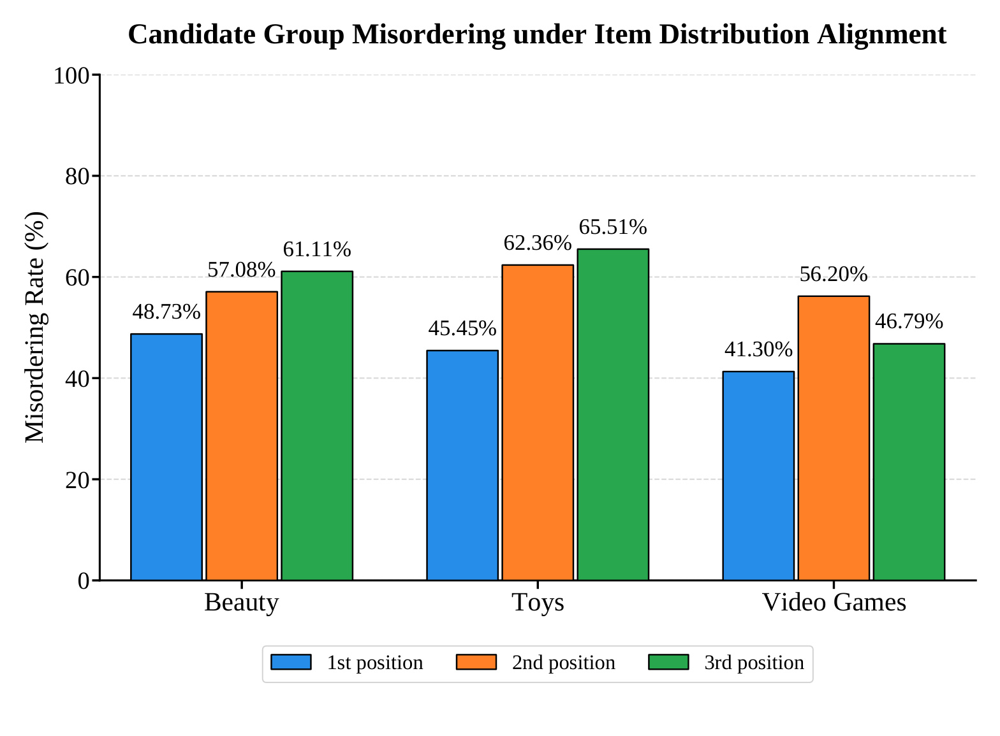
Figure 2 的横轴为 Beauty、Toys、Video Games，柱子颜色对应三个中间 SID 位置，纵轴是群组错序率。每次比较取共享上一级前缀的四个有效群组，只要学生颠倒了教师任一严格顺序或给出平局，就计为错误。因此数值不是普通逐位置分类错误率，也不能理解为有一半最终推荐必然错误。Beauty 三层约为百分之四十八点七三、五十七点零八、六十一点一一；不同数据集和层级范围约为四十一到六十六，平均百分之五十三点八。它说明近似物品分布对齐之后，群组顺序仍有明显残留误差。
这个结果支持额外监督的动机，但还不能单独证明 HCDA 必然改善业务指标。错序率对很接近的群组也使用严格比较，平局同样计错；四群组协议和教师候选支持决定了统计范围。若教师本身对长尾群组有系统偏差，向它对齐也可能复制该偏差。论文随后用消融比较同一学生的推荐成绩，并用层级 KL 与最优群组不一致率检查是否改善对应机制，才形成比单张柱图更完整的证据链。不能用这张图宣称精确叶子匹配仍不能恢复群组概率。
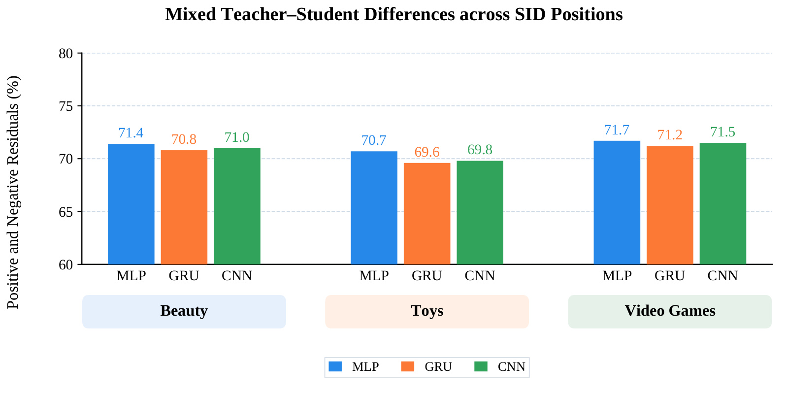
Figure 3 在三个数据集下分别列出 MLP、GRU、CNN，纵轴统计跨教师 Top-K 边界的物品对中，有的层残差为正而另一些层为负的比例。所有设置集中在百分之六十九点六到七十一点七附近，说明分数贡献的方向冲突在这套候选与学生配置中很常见，而不只是 Figure 1 的特殊例子。MLP、GRU、CNN 之间的比例差别不大，因此作者用统一加权原则处理不同轻量结构有一定经验依据。图没有说明负残差的大小，也没有说明这些物品对距离实际推荐边界有多近，这些因素仍会影响最终损失变化。
残差符号不是“教师该位置预测错了”的标记。教师完整分数仍把较好候选排在前面，只是各位置贡献的分配与学生不同；学生某一位偏好更强也不意味着整体排序正确。RIGD 因而用整物品差作为背景，只评价局部替换后代理损失的变化，再停止梯度形成权重。这个局部操作仍未建模多个位置同时修正后的相互作用，图中较高混合符号比例只能支持逐层差异值得关注，不能据此证明所有非正增益位置都应永久丢弃知识。
3.3 消融：结构对齐与逐层权重是否各有贡献
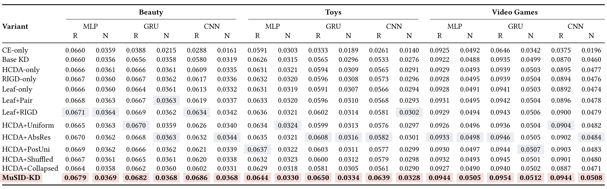
Table 2 每个数据集列出三个学生的 Recall@10 与 NDCG@10。CE-only 只用真实行为监督，Base KD 加普通 token 蒸馏，HCDA-only 和 RIGD-only 则分别加入两项结构目标；Leaf-only、Leaf+RIGD 和多种 HCDA 变体继续隔离具体机制。完整方法在九个设置的 NDCG@10 都优于表中各变体。和保留 RIGD 但只有叶子 KL 的 Leaf+RIGD 相比，加入中间群组对齐的平均相对 NDCG@10 提升为百分之四点二一；这比直接拿完整方法对 CE-only 更能说明层级目标的附加价值，因为后者同时改变了许多监督信息。
对权重的比较也有层次。Uniform 平均监督可用位置，AbsRes 主要按残差幅度分配，PosUni 只在正残差位置平均分配；完整方法同时选择有利方向并按代理改善大小区分位置。Beauty 的 CNN NDCG@10 中，Uniform 为零点零三四零，AbsRes 为零点零三四四，完整方法为零点零三六八。这个对比支持“纠正多大”和“对当前排序有多少帮助”不能简单等价，但仍然只证明当前固定损失、尺度和超参数组合较好，未说明替换增益是唯一可行的权重设计。
Shuffled 对教师和学生候选得分使用相同请求内排列，却保持 SID 叶子位置固定，破坏概率与群组的对应；其退化说明不是随便增加多个 KL 项就能得到同样收益。Collapsed 则先把可用层残差合并再做一次 Huber，同时把固定逐层尺度改成当前 minibatch 的合并标准差。因此它与完整方法的差异不只在监督粒度，不能把全部性能差距都归结为“逐层一定优于合并”。直接 Pair 变体最小化完整物品差的 Softplus，而 RIGD 用替换增益加权原始贡献的 Huber，两者目标也不同。解释消融必须保留这些实现差异，避免把多个同时变化的因素当成一个干净因果实验。
这些变体仍保留真实下一物品交叉熵，所以完整方法并非仅用教师排序替换真实标签。比较时既要保持教师和码本一致，也要保证损失归一化与系数没有无意改变有效训练强度。
3.4 知识转移诊断与替代码本
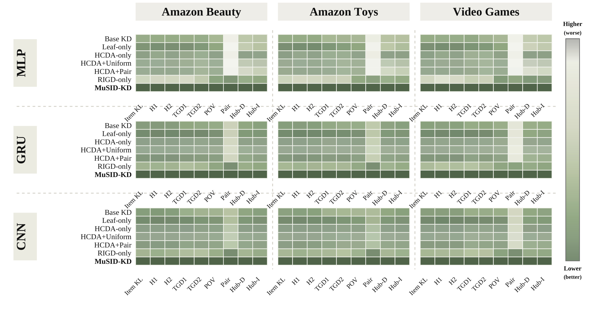
Figure 5 按列分数据集、按行分学生，每个小面板又包含七种训练方法与九项误差指标。颜色越深表示误差越低，但颜色在各数据集、学生和指标内部归一化，不能跨格比较深浅来判断哪个数据集绝对误差更大。Item KL 看完整候选概率；HDrift 与 TGD 看前缀边缘和最可能群组；POV、Pair 与两种 Huber 看物品顺序及逐层贡献。完整方法整体颜色较深，HCDA-only 对群组误差更有针对性，RIGD-only 对排序相关误差更突出，符合两模块设计的职责区分。
这些诊断使用教师 Top-40 候选，而训练默认最多六十四个；同一图也不是全目录排序的测量。POV 把学生反转和平局都计为违反教师顺序，Huber-D/I 的权重从一个固定 Base KD 参考计算，避免每个被评估模型自行挑选有利权重。Pair Softplus 诊断使用间隔零点零五的形式，与直接 Pair 训练控制中的温度缩放形式不同。候选对是否包含真实下一物品也不是所有诊断的条件，所以它们衡量知识模仿机制，不能取代 Recall 或 NDCG。后面的原始表值比热图更适合核对幅度与反例。
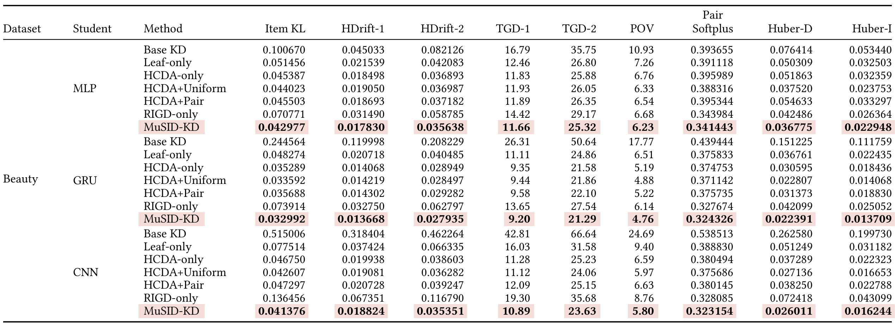
Table D1 为 MLP、GRU、CNN 分别提供完整原始误差。以 CNN 为例，从 Leaf-only 到 HCDA-only，第二层边缘 KL 从零点零六六三三五降到零点零三八六零三，第二层最优群组不一致率从百分之三十一点五八降到二十五点二三。保持 HCDA 再比较 Uniform 与完整方法，Pair Softplus 从零点三七五六八六降到零点三二三一五四，POV 从百分之五点九七降到五点八零。MLP 同项 Pair Softplus 从零点三八八三一六到零点三四一四四三，提供了权重改变确实对应排序代理改善的证据，而不是只靠主结果平均提升反推机制成立。
但不同指标没有完全相同的排序。MLP 的 HCDA-only Item KL 优于 Leaf-only，却在 Pair Softplus 上从零点三九一一一八到零点三九五九八九，数值反而变差；CNN 的某些群组指标也不能仅凭一个指标下降就推断所有物品对都更合理。这说明概率模仿与最终顺序有不同侧重，正是组合两个目标的动机之一。表中的百分数与无尺度 KL、Softplus、Huber 不可横向比大小，且机制均值没有给出逐请求分布或完整置信区间。结论宜限定为这些固定候选与配对规则下的平均对齐改善，尚不构成对每个用户或长尾切面的保证。
表内两个 Huber 诊断使用固定参考规则形成权重，而不是让完整方法使用自己的正增益位置来评价自己。这减少了模型通过只选择容易对齐的位置获得较低诊断误差的风险。不过固定参考仍来自 Base KD，反映的是相同参考物品对上的贡献误差；若改换教师、码本或候选支持，这些尺度与权重也要重建。跨架构的编码和分数尺度不同，因此不能仅凭 CNN 的某项 Huber 数值比 MLP 小，就认定其完整推荐能力更好。
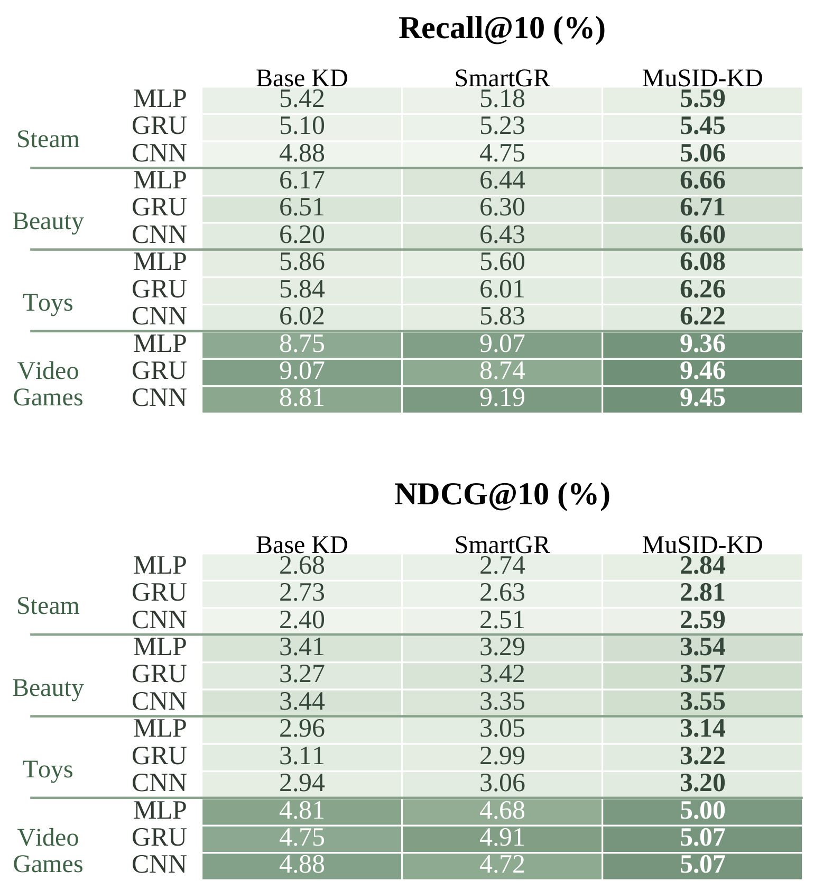
Figure 6 上下分别展示 Recall@10 和 NDCG@10，指标统一为百分数。四个数据集各有三种学生，对比 Base KD、SmartGR 与 MuSID-KD，后者在二十四个数据集—架构—指标设置中均取得最高值。以 Beauty 的 GRU 为例，NDCG@10 分别为三点二七、三点四二和三点五七；这说明收益并非只存在于主实验的 RQ-VAE 码本。论文报告该码本下平均 NDCG@10 相对 Base KD 提升百分之五点五零，相对两种对照中较强者提升百分之三点六一。其分母比主表“所有其他学生中最强者”更窄，二者不应直接当成同一难度的胜率。
替代码本实验中教师与学生一起采用相同 R-KMeans 映射，因此证明的是目标可以在另一套共享语义结构上工作，而不是支持教师与学生使用不同码本。它也没有测试训练中动态更换码号、物品增删或类别结构失效。图表式展示保留全部数值，适合检查是否某个学生或数据集例外；均值领先仍需与三种子范围和更大目录验证结合，不能从两类 tokenizer 就概括为对任意离散表示都稳定有效。
3.5 训练代价、缓存导出与在线服务
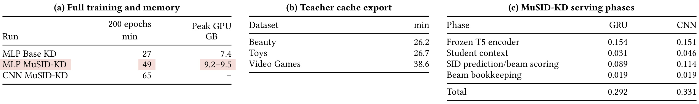
Table B1 是原论文的一张三面板表，不是把无关图表拼接。左侧报告包含 beam 验证的二百轮训练时长，Beauty 的 MLP Base KD 为二十七分钟，MuSID-KD 为四十九分钟，约增加百分之八十一点五；峰值显存从七点四 GB 到九点二至九点五 GB。CNN 的完整训练为六十五分钟，但没有给出对应 Base KD 训练时间与峰值显存，因此不能用这个单行推断 CNN 的相对开销。中间面板显示教师缓存导出还需要 Beauty 二十六点二、Toys 二十六点七、Video Games 三十八点六分钟，离线教师不在服务链路上，并不表示这部分成本消失。
右侧按请求拆分 GRU 与 CNN 的在线阶段。冻结编码器分别约零点一五四和零点一五一毫秒，学生上下文读出约零点零三一和零点零四六毫秒，SID 预测与 beam 打分约零点零八九和零点一一四毫秒，beam 管理均约零点零一九毫秒，总计零点二九二和零点三三一毫秒。表中的展示舍入使分项求和可能与总值相差一个最末位，不能将这种舍入差解释为遗漏模块。当前这些数值帮助定位成本构成，但没有完整网络、调度和业务特征读取链路，不是任意生产环境下的端到端请求延迟。
主文同架构的 Base KD/MuSID-KD 吞吐为 MLP 二千七百六十九/三千零三十六、GRU 三千四百四十五/三千四百二十三、CNN 三千零二十八/三千零二十四请求每秒；GRU 与 CNN 略低，合理结论是服务效率大致相当，而非全部提速。附录说明学生 serving batch 为三十二，教师 throughput batch 为六十四，所以跨教师学生的直接速度比还带有不同批量条件。本方法的新增计算主要在训练与缓存阶段，线上结构保持一致支持质量改进较少增加服务模块，但没有实测误差条，也没有把离线开销摊入整个生命周期预算。
3.6 超参数敏感性与默认值的边界
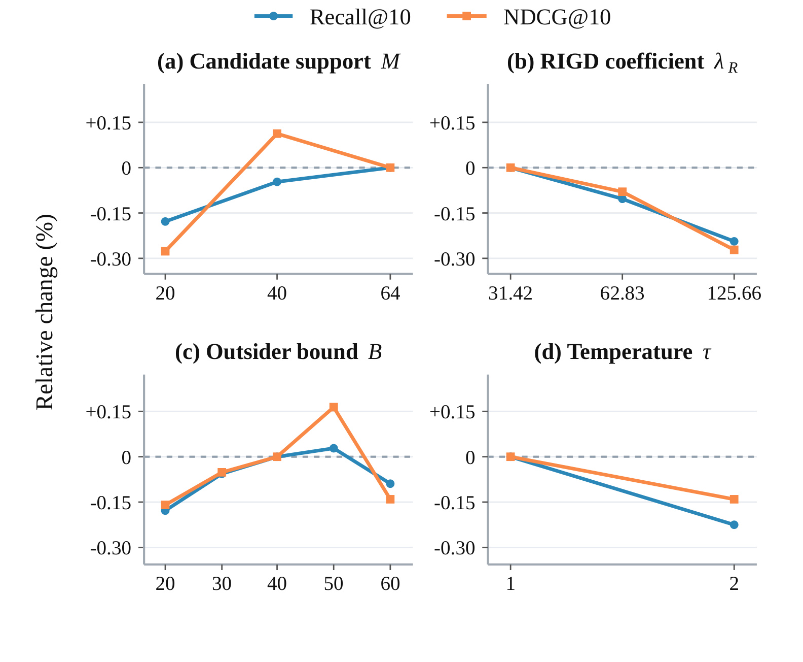
Figure A1 仅针对 Beauty 的 MLP。四个子图分别改变候选数 M、RIGD 系数、较低排名边界 B 和概率温度，纵轴是相对对应参考配置的 Recall@10 或 NDCG@10 变化百分比，虚线为零。不能把纵轴零点一五直接读成 NDCG 增加零点一五个百分点。M 从二十扩至六十四整体更稳，但四十的 NDCG 点高于六十四；B 从二十到五十时改善，六十又下降；较大的 RIGD 系数和温度二在图中都降低指标。这些局部非单调现象说明“候选更多、对齐更强”并不总是更好，也不能把默认设置称为所有指标的全局最优。
这一小幅敏感性图没有误差条，仅覆盖一个数据集与架构。B 小于可用候选规模才形成有效的跨边界对，候选实际不足时需使用有效边界；否则采样协议和目标强度会改变。较大权重还会与真实行为交叉熵竞争，温度则同时改变叶子和前缀分布的平滑程度。复现时应固定其他设置并记录验证集选择过程，不能从图中挑一个测试点反过来调参。图支持在给定范围内检查超参数变化，尚不能替代新数据、新码本或更大目录下的重新验证。
4. 总结
MuSID-KD 把语义码蒸馏拆成两个具有不同信息作用的目标。HCDA 显式保存共享前缀的群组概率质量，RIGD 把当前完整物品排序作为背景，选择值得纠正的非最终码位，再对教师与学生原始分数贡献做尺度归一化对齐。它的价值在于把“向教师靠近”从统一 token 操作变为依赖输出结构与决策影响的监督设计。完整候选分布、前缀边缘和物品对间隔在同一支持上定义，使方法较容易检查，也让它的适用条件比泛化的蒸馏口号清楚得多。
对已经使用固定 SID、冻结或稳定历史编码器和合法 beam search 的推荐系统，这一目标可作为离线压缩时的候选方向。应先确认教师候选覆盖和学生架构确实构成瓶颈，再比较普通 token KL、叶子分布 KL、层级 KL 与逐层排序校正；若只对一个弱 Base KD 报较大相对增益，很难知道新目标相对更强学生还有多少空间。线上不加目标计算是一个有价值的约束，但仍要把训练时长、显存、缓存导出和码本维护计入项目成本。本文的 MLP 吞吐波动不能被解释为结构化损失本身产生了稳定的运行时加速。
局限首先是候选支持：所有群组和物品对目标都来自教师候选，目录外和教师遗漏物品不能直接获得同样的结构知识。第二，教师排序是软监督而非用户真实偏好，偏差可能随蒸馏一起传递。第三，RIGD 只看单层替换后的局部代理，不评价多层共同修正或 beam 搜索路径变化的全局结果，最终层排除也带来明确设计取舍。第四，三种子均值和部分标准差不足以支持所有比较都显著，长尾用户、冷启动和分布漂移也没有单独给出结论。第五，当前成本在固定批量和有限基准下测量，没有线上 A/B，也没有完整生命周期经济性分析；匿名仓库本次无法访问进一步限制独立复核。
机制分析还提醒读者，不同诊断不能互相替代。前缀 KL 降低不保证每个物品对的间隔变好，教师最优群组一致也不保证真实目标命中；推荐均值提高则可能掩盖某些用户切面的损失。理想的复现实验应同时记录叶子概率、前缀边缘、教师截断边界附近的错误对和最终推荐指标，并保留共享支持、归一化温度与尺度统计。这样才能判断收益来自新增信息、优化权重还是学生原本较弱的监督设置，而不只是再得到一个更高的汇总分数。
后续值得优先做三项验证。第一，扩大候选支持并设计覆盖与成本对照，将候选数、教师质量和学生容量同时纳入评估，检查群组监督在高覆盖目录中是否仍有收益。第二，研究码本更新与物品增删，确认缓存的群组概率和标准差何时失效，以及重新导出成本如何摊销；这直接决定方法能否进入持续更新的推荐链路。第三，在统一硬件、批量与停止规则下复核全部学生，公开多种子差异与失败切面，并与多层联合修正、不同代理损失比较。对结构化语言模型输出的迁移也应先固定层级和合法映射，再检验代理排序与任务成败是否一致；开放文本没有相同的叶子物品集合，不能直接照搬当前候选概率求和。当前笔记是对公开论文的精读和边界分析，没有声称完成作者训练或实际业务验证。